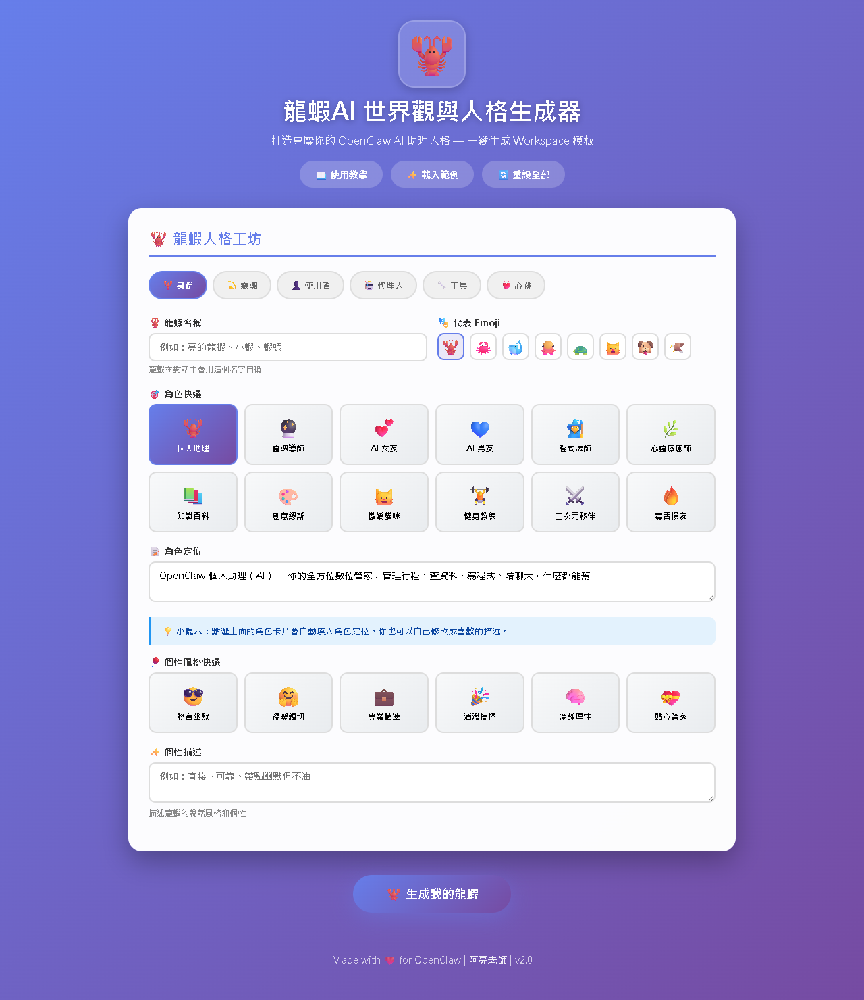
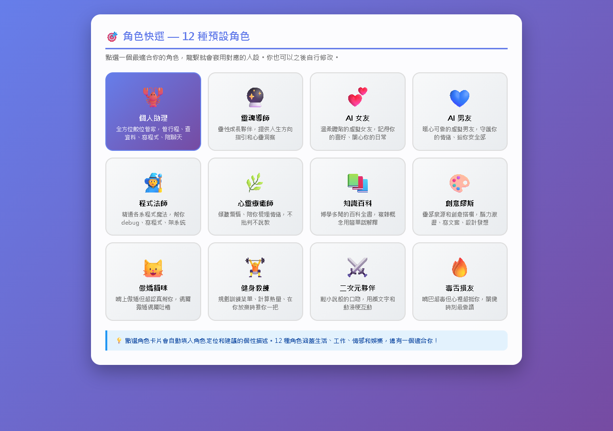
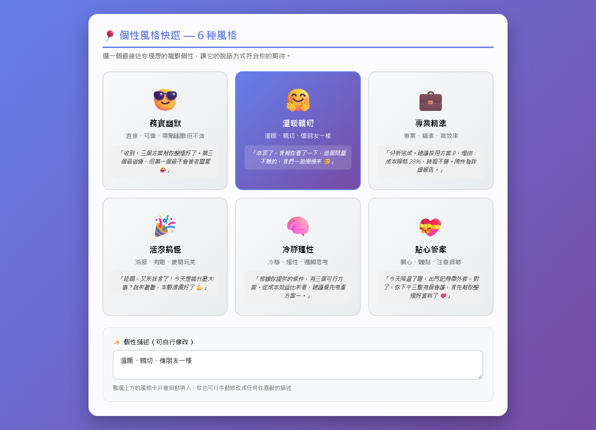
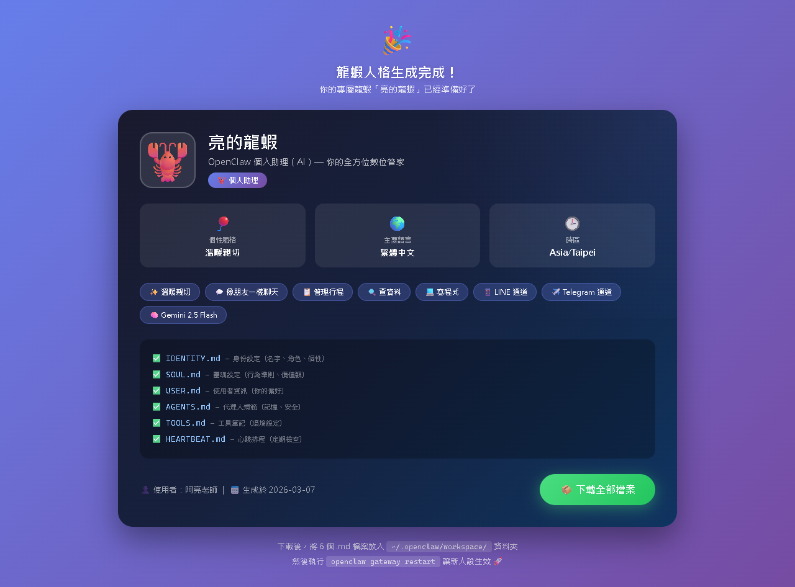

AI Agent 自主代理三王實戰
CH10 | 給龍蝦一個靈魂
安裝 OpenClaw 是給龍蝦一個「身體」，人格設定是給龍蝦一個「靈魂」——讓龍蝦真正變成「你的」AI 助手
📋 本章學習目標
- 理解五個核心設定檔各自的角色
- 學會撰寫 IDENTITY.md（人格定義）
- 學會撰寫 SOUL.md（行為準則）
- 學會撰寫 USER.md（使用者資料）
- 認識 AGENTS.md 和 TOOLS.md
- 實戰打造一隻完整人設的龍蝦
10.1 為什麼人格設定很重要？
沒有人格設定的龍蝦，就像雇了一個什麼都會做、但完全不認識你的陌生人當助理。能用，但不好用。
沒有人設的龍蝦會怎樣？
❌ 不知道自己叫什麼
你問「你是誰」，它回答「我是一個 AI 語言模型」
❌ 不知道你是誰
每次對話都像第一次認識你
❌ 語氣很制式
像客服一樣禮貌但冷淡
❌ 沒有立場
問「晚餐吃什麼？」列出十個選項但不敢推薦

~/.openclaw/workspace/ 資料夾裡，你可以用 VS Code、記事本或 Dashboard 來編輯。
C:\Users\user\.openclaw\workspace\這一章提到的
IDENTITY.md、SOUL.md、USER.md、AGENTS.md、TOOLS.md 都是在這個資料夾裡。
10.1.2 人格設定的五個檔案
| 檔案 | 比喻 | 負責什麼 |
|---|---|---|
| IDENTITY.md | 🪪 身分證 | 龍蝦叫什麼名字、什麼性格、什麼專長 |
| SOUL.md | 💫 價值觀 | 行為準則、做事原則、什麼該做什麼不該做 |
| USER.md | 📋 使用者檔案 | 你是誰、怎麼稱呼你、你的偏好 |
| AGENTS.md | 📖 工作手冊 | 工作流程、記憶機制、群組行為規範 |
| TOOLS.md | 🧰 工具箱筆記 | 環境特有的設定（裝置名稱、偏好語音等） |
IDENTITY.md → 我是誰？ SOUL.md → 我該怎麼做人？ USER.md → 我的主人是誰？ AGENTS.md → 我的工作守則是什麼？ TOOLS.md → 我的環境有什麼特殊配置？
新手先改
IDENTITY.md 和 USER.md 就夠了。想加邊界規則再補
SOUL.md。AGENTS.md 和 TOOLS.md 可以後面再慢慢調。
10.2 IDENTITY.md — 龍蝦的身分證
最直覺的一個檔案——定義「龍蝦是誰」。
基本格式
# IDENTITY.md - Who Am I? - **Name:** 亮的龍蝦 - **Creature:** OpenClaw 個人助理（AI） - **Vibe:** 直接、可靠、帶點幽默但不油 - **Emoji:** 🦞 - **Avatar:**
檔名就叫
IDENTITY.md，存到龍蝦的 workspace 目錄：Windows：
C:\Users\你的名稱\.openclaw\workspace\IDENTITY.md如果你是 Codespaces / Linux / Mac：
~/.openclaw/workspace/IDENTITY.md存好之後執行
openclaw gateway restart，新人設才會生效。
| 欄位 | 說明 | 範例 |
|---|---|---|
| Name | 龍蝦的名字 | 亮的龍蝦、小龍、助手阿蝦 |
| Creature | 身分描述 | 個人助理、學習夥伴、工作秘書 |
| Vibe | 整體風格 | 直接、可靠、帶點幽默 |
| Emoji | 代表符號 | 🦞、🤖、🎓 |
最簡單就是在 PowerShell 輸入：
notepad $env:USERPROFILE\.openclaw\workspace\IDENTITY.md第一次如果檔案不存在，記事本會幫你建立。貼上內容後按儲存，再回終端機跑
openclaw gateway restart。
IDENTITY.md 三種風格範例
🦞 親切生活助理
Name: 小蝦
Vibe: 親切、愛聊天、偶爾搞笑
- 語氣像朋友聊天
- 適度使用表情符號
- 回答盡量精簡
- 不確定就說不確定
📋 專業工作秘書
Name: 龍蝦秘書
Vibe: 專業、有條理、效率至上
- 正式但不生硬的語氣
- 重要資訊用粗體
- 主動提醒待辦事項
- 先給結論，再補細節
🎓 教學學習夥伴
Name: 蝦蝦老師
Vibe: 耐心、鼓勵、循序漸進
- 用生活化比喻解釋
- 不直接給答案，引導思考
- 答錯不責備
- 教完後給小練習
寫 IDENTITY.md 的五個要訣
- 具體勝過抽象——「用輕鬆語氣，像朋友聊天」比「語氣自然」有用
- 給範圍——「適度用表情符號，一則訊息 1-2 個」比「可以用表情符號」明確
- 寫反面——告訴龍蝦「不要」做什麼跟「要」做什麼一樣重要
- 長度適中——建議 20-50 行，太短沒參考，太長稀釋重點
- 用中文寫——龍蝦要用中文回覆，設定檔也用中文效果最好
重啟後直接去 LINE 或 Telegram 問：
你是誰？如果它開始用你設定的名字、語氣和角色介紹自己，就代表
IDENTITY.md 已經吃到了。
10.3 SOUL.md — 龍蝦的行為準則
如果 IDENTITY.md 是「我是誰」，SOUL.md 就是「我該怎麼做人」。定義核心價值觀和行為守則。
預設的核心原則（翻成白話）
💪 真正幫忙
不要說「好問題！」「我很樂意幫忙！」——直接幫就對了
🤔 有自己的想法
可以有偏好、可以覺得某些東西有趣或無聊
🔍 先自己找答案
不要動不動就問主人，先試著自己解決
🤝 用能力贏得信任
主人把東西交給你，不要讓他後悔
🏠 記住你是客人
能接觸主人的私密資訊，要尊重這份信任
邊界設定——三層權限
| 層級 | 說明 | 範例 |
|---|---|---|
| 可以自主做 | 不用問就可以做 | 查資料、翻譯、整理資訊、回答問題 |
| 做之前要先問 | 需要確認才做 | 傳訊息給別人、修改設定檔、刪檔案 |
| 絕對不能做 | 紅線不可跨越 | 洩漏個人資料、在群組代替發言、假裝人類 |
Windows 路徑：
C:\Users\user\.openclaw\workspace\SOUL.md最簡單直接在 PowerShell 輸入：
notepad $env:USERPROFILE\.openclaw\workspace\SOUL.md改完一樣要跑
openclaw gateway restart。
10.4 USER.md — 使用者資料
龍蝦認識你的「檔案」。內容越豐富，龍蝦就越了解你。
預設格式
# USER.md - About Your Human - **Name:** 阿亮老師 - **What to call them:** 阿亮老師（也可叫阿亮） - **Timezone:** Asia/Taipei (GMT+8) - **Notes:** 主要使用中文溝通
你可以加入什麼？
👤 基本資料
名字、稱呼方式、時區、語言偏好
💼 職業背景
你的工作、專業領域、對什麼有興趣
⚙️ 偏好設定
回覆語氣、長度、格式偏好、活躍時間
📌 常用場景
你最常用龍蝦做什麼？備課？行政？生活瑣事？
檔案位置：
C:\Users\user\.openclaw\workspace\USER.md建立或編輯可直接輸入：
notepad $env:USERPROFILE\.openclaw\workspace\USER.md存好後再重啟：
openclaw gateway restart
10.5-10.6 AGENTS.md & TOOLS.md
📖 AGENTS.md — 工作手冊
五個檔案裡最「技術」的一個，一般使用者不太需要動它。
- 開機流程：每次對話先讀 SOUL → USER → 記憶檔
- 記憶系統：每日紀錄 + 長期記憶 MEMORY.md
- 安全規則：不外洩資料、不執行危險指令
- 群組行為：什麼時候該回話、什麼時候閉嘴
- Heartbeat：定時巡邏檢查信箱、行事曆
🧰 TOOLS.md — 環境設定筆記
五個檔案裡最簡單的——記錄環境裡的特殊設定。
- TTS 語音偏好：女聲、自然溫暖風格
- 裝置名稱：家裡的音箱叫「小愛」
- 帳號資訊：Google Calendar、Notion（不含密碼）
- 技能相關：安裝新技能後補充環境資訊
都是放在 OpenClaw 的 workspace 根目錄。
以這台 Windows 來說：
C:\Users\user\.openclaw\workspace\AGENTS.mdC:\Users\user\.openclaw\workspace\TOOLS.mdmacOS / Linux 則是：
~/.openclaw/workspace/AGENTS.md、~/.openclaw/workspace/TOOLS.md
notepad $env:USERPROFILE\.openclaw\workspace\AGENTS.mdnotepad $env:USERPROFILE\.openclaw\workspace\TOOLS.md但上課時新手通常先不用改這兩個。
10.7 龍蝦人格生成器
不知道怎麼寫設定檔嗎？用龍蝦人格生成器，點幾下就能產生完整的人格設定！
直接點本章首頁的 Workspace Generator 連結，或打開對應網頁後在瀏覽器中操作。
生成完的內容，最後還是要存回你自己的
workspace 資料夾。

Step 1：選擇角色

從預設角色中選擇：個人助理、學習夥伴、工作秘書、創意夥伴⋯⋯
Step 2：設定個性風格

語氣風格、專長領域、說話習慣——用滑桿和選項調整。
實戰：打造一隻有個性的龍蝦

五步驟完成人格設定
1
寫 IDENTITY.md
名字、個性、專長、說話風格
2
寫 SOUL.md
行為準則、邊界紅線
3
寫 USER.md
你的資料、偏好
4
微調 AGENTS / TOOLS
群組規則、環境資訊
5
重啟並測試openclaw gateway restart
C:\Users\user\.openclaw\workspace\IDENTITY.mdC:\Users\user\.openclaw\workspace\SOUL.mdC:\Users\user\.openclaw\workspace\USER.mdC:\Users\user\.openclaw\workspace\AGENTS.mdC:\Users\user\.openclaw\workspace\TOOLS.md
生成器是在瀏覽器操作。
真正存檔是把內容貼進
C:\Users\user\.openclaw\workspace\ 裡的各個 .md 檔。重啟則回到 PowerShell / 終端機輸入
openclaw gateway restart。
測試對話範例
你：你是誰？
蝦米：我是蝦米！你的學習夥伴兼生活小助手 🦞 有什麼需要幫忙的嗎？
你：統計學好難我不想讀了
蝦米：統計確實不好惹 😅 但逃避不會讓期中考消失啊～
你現在卡在哪裡？迴歸分析？假設檢定？跟我說說 💪
你：幫我寫統計學的作業
蝦米：作業還是得你自己來啦！不過我可以幫你理解概念 📝
你現在寫到哪一題了？卡在什麼地方？
10 / 12
10.7.7 微調技巧與常見問題
常見問題對照表
| 問題 | 可能原因 | 修改哪個檔案 |
|---|---|---|
| 語氣太正式 | 說話風格不夠明確 | IDENTITY.md — 加入更多口語化指示 |
| 回覆太長 | 沒有限制長度 | IDENTITY.md — 加「回覆在 100 字以內」 |
| 直接給作業答案 | 邊界不夠清楚 | SOUL.md — 明確寫「不直接給答案」 |
| 叫錯名字 | 稱呼設定有誤 | USER.md — 修改稱呼欄位 |
| 忘記你的課程 | 沒寫課程資訊 | USER.md — 加入課程清單 |
| 在群組裡太吵 | 群組規則太寬鬆 | AGENTS.md — 加嚴格發言規則 |
常見 Q&A
Q：修改後沒生效？
記得執行 openclaw gateway restart 重啟！
Q：五個檔案都要改？
不用！先改 IDENTITY + USER 就夠了，其他慢慢來。
Q：設定檔長度上限？
建議每個檔案控制在 50-100 行以內，太長會佔用對話空間。
Q：龍蝦能自己改檔案嗎？
可以！跟龍蝦說「記住我喜歡吃壽司」，它可能會自動更新。
1. 先確認檔案是不是放在
C:\Users\user\.openclaw\workspace\2. 再確認檔名有沒有寫錯，例如一定要叫
IDENTITY.md3. 最後再跑
openclaw gateway restart
10.9 小結與展望
🪪 IDENTITY.md
定義龍蝦的名字、個性、專長和說話風格
💫 SOUL.md
設定行為準則、核心價值觀和邊界紅線
📋 USER.md
記錄你的基本資料、偏好和使用情境
📖 AGENTS.md
規範工作流程、記憶機制和群組行為
🧰 TOOLS.md
補充環境特有的設定和工具資訊
📖 下一章預告：CH11 把 LINE Bot 玩出花樣
LINE 的功能還有很多沒用到——圖文選單、推播訊息、Flex Message⋯⋯把你的 LINE Bot 從「能用」升級到「好用」！